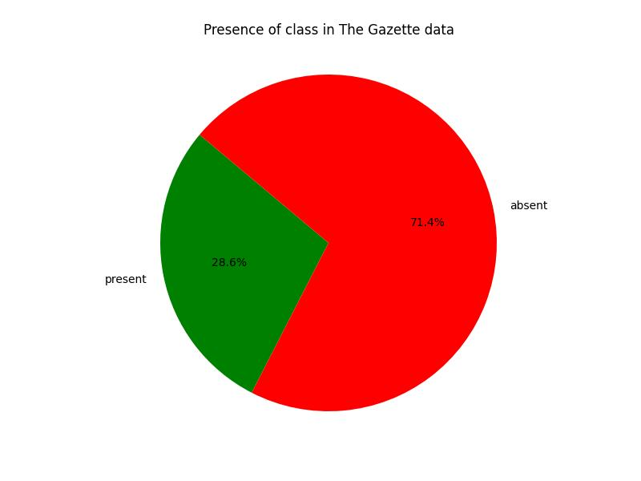
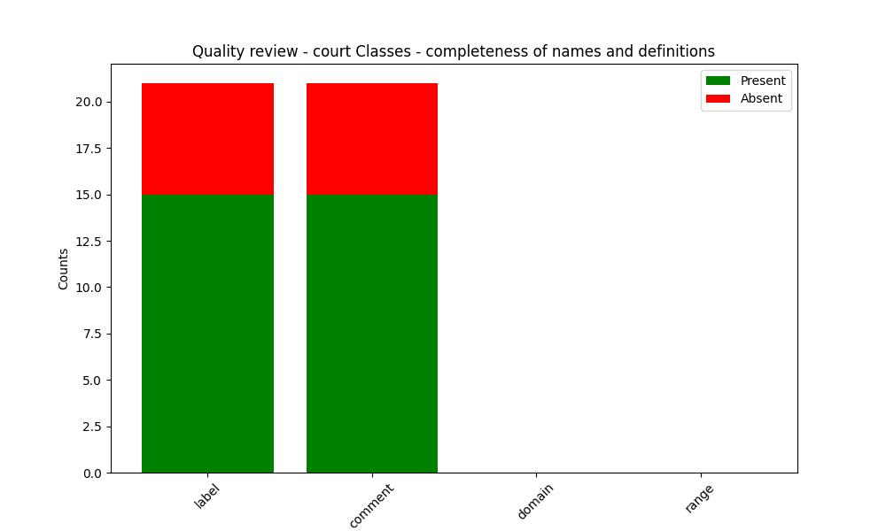
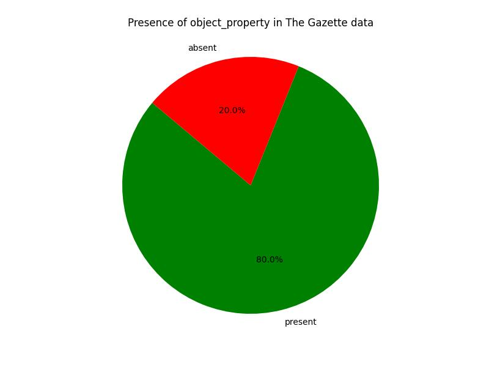
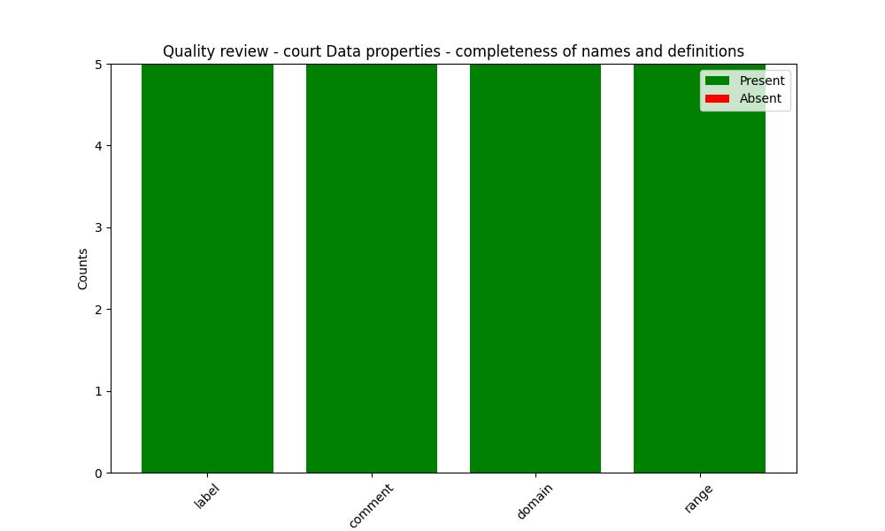

The Gazette Data Model
Court Ontology
Documentation
View documentationQuality review
OWL Class
Relevance
Frequency in The Gazette data
| URI | Frequency |
|---|---|
| https://www.thegazette.co.uk/def/organisation#LimitedCompany | 1418820 |
| https://www.thegazette.co.uk/def/person#Person | 1028080 |
| https://www.thegazette.co.uk/def/court#CourtCase | 786007 |
| https://www.thegazette.co.uk/def/court#Court | 784924 |
| https://www.thegazette.co.uk/def/organisation#Organisation | 114181 |
| https://www.thegazette.co.uk/def/organisation#Partnership | 26098 |
| https://www.thegazette.co.uk/def/court#PartnershipCourtCase | 0 |
| https://www.thegazette.co.uk/def/organisation#SoleTrader | 0 |
| https://www.thegazette.co.uk/def/court#SoleTraderCourtCase | 0 |
| https://www.thegazette.co.uk/def/court#QueensBenchDivision | 0 |
| https://www.thegazette.co.uk/def/court#PersonCourtCase | 0 |
| http://www.geonames.org/ontology#Feature | 0 |
| https://www.thegazette.co.uk/def/court#OrganisationCourtCase | 0 |
| https://www.thegazette.co.uk/def/court#ChanceryDivision | 0 |
| https://www.thegazette.co.uk/def/court#HighCourt | 0 |
| https://www.thegazette.co.uk/def/court#FamilyDivision | 0 |
| https://www.thegazette.co.uk/def/court#DistrictRegistry | 0 |
| https://www.thegazette.co.uk/def/court#CrownCourt | 0 |
| https://www.thegazette.co.uk/def/court#CountyCourt | 0 |
| https://www.thegazette.co.uk/def/court#CompanyCourtCase | 0 |
| https://www.thegazette.co.uk/def/court#MagistratesCourt | 0 |
Completeness
| URI | http://www.geonames.org/ontology#Feature |
|---|---|
| Label | None |
| Comment | None |
| URI | https://www.thegazette.co.uk/def/court#ChanceryDivision |
|---|---|
| Label | ChanceryDivision Class |
| Comment | Chancery Division of the High Court |
| URI | https://www.thegazette.co.uk/def/court#CompanyCourtCase |
|---|---|
| Label | CompanyCourtCase |
| Comment | Court case involving a limited company |
| URI | https://www.thegazette.co.uk/def/court#CountyCourt |
|---|---|
| Label | CountyCourt Class |
| Comment | County Court |
| URI | https://www.thegazette.co.uk/def/court#Court |
|---|---|
| Label | Court |
| Comment | Superclass for all types of Court |
| URI | https://www.thegazette.co.uk/def/court#CourtCase |
|---|---|
| Label | CourtCase |
| Comment | A Court Case |
| URI | https://www.thegazette.co.uk/def/court#CrownCourt |
|---|---|
| Label | CrownCourt Class |
| Comment | Crown Court |
| URI | https://www.thegazette.co.uk/def/court#DistrictRegistry |
|---|---|
| Label | DistrictRegistry Class |
| Comment | A District Registry Court |
| URI | https://www.thegazette.co.uk/def/court#FamilyDivision |
|---|---|
| Label | FamilyDivision Class |
| Comment | A FamilyDivision of the High Court |
| URI | https://www.thegazette.co.uk/def/court#HighCourt |
|---|---|
| Label | HighCourt Class |
| Comment | The High Court |
| URI | https://www.thegazette.co.uk/def/court#MagistratesCourt |
|---|---|
| Label | MagistratesCourt Class |
| Comment | A Magistrates Court |
| URI | https://www.thegazette.co.uk/def/court#OrganisationCourtCase |
|---|---|
| Label | OrganisationCourtCase Class |
| Comment | Court Case involving an organisationp |
| URI | https://www.thegazette.co.uk/def/court#PartnershipCourtCase |
|---|---|
| Label | PartnershipCourtCase Class |
| Comment | Court Case involving a Partnership |
| URI | https://www.thegazette.co.uk/def/court#PersonCourtCase |
|---|---|
| Label | PersonCourtCase Class |
| Comment | Court Case involving an individual |
| URI | https://www.thegazette.co.uk/def/court#QueensBenchDivision |
|---|---|
| Label | QueensBenchDivision Class |
| Comment | Queens Bench Division of the High Court |
| URI | https://www.thegazette.co.uk/def/court#SoleTraderCourtCase |
|---|---|
| Label | SoleTraderCourtCase Class |
| Comment | Court Case involving a Sole Trader |
| URI | https://www.thegazette.co.uk/def/organisation#LimitedCompany |
|---|---|
| Label | None |
| Comment | None |
| URI | https://www.thegazette.co.uk/def/organisation#Organisation |
|---|---|
| Label | None |
| Comment | None |
| URI | https://www.thegazette.co.uk/def/organisation#Partnership |
|---|---|
| Label | None |
| Comment | None |
| URI | https://www.thegazette.co.uk/def/organisation#SoleTrader |
|---|---|
| Label | None |
| Comment | None |
| URI | https://www.thegazette.co.uk/def/person#Person |
|---|---|
| Label | None |
| Comment | None |
Object property
Relevance
Frequency in The Gazette data
| URI | Frequency |
|---|---|
| https://www.thegazette.co.uk/def/court#hasCourt | 786894 |
| https://www.thegazette.co.uk/def/court#hasCourtCase | 5326 |
| https://www.thegazette.co.uk/def/court#hasFollowingCourtCase | 0 |
| https://www.thegazette.co.uk/def/court#hasPreviousCourtCase | 0 |
| https://www.thegazette.co.uk/def/court#hasRelatedCourtCase | 0 |
| https://www.thegazette.co.uk/def/court#involvedInCourtCase | 0 |
| https://www.thegazette.co.uk/def/court#involvedInPersonCourtCase | 0 |
| https://www.thegazette.co.uk/def/court#isAboutOrganisation | 0 |
| https://www.thegazette.co.uk/def/court#isAboutPerson | 0 |
| https://www.thegazette.co.uk/def/court#isRelatedToCourtCase | 0 |
| https://www.thegazette.co.uk/def/court#sitsAt | 0 |
Completeness
| URI | https://www.thegazette.co.uk/def/court#hasCourt |
|---|---|
| Label | hasCourt property |
| Comment | Court associated with a Court Case Inverse of hasCourtCase |
| Domain | https://www.thegazette.co.uk/def/court#CourtCase |
| Range | https://www.thegazette.co.uk/def/court#Court |
| URI | https://www.thegazette.co.uk/def/court#hasCourtCase |
|---|---|
| Label | hasCourtCase property |
| Comment | Court Case associated with a Court Inverse of hasCourt |
| Domain | https://www.thegazette.co.uk/def/court#Court |
| Range | https://www.thegazette.co.uk/def/court#CourtCase |
| URI | https://www.thegazette.co.uk/def/court#hasFollowingCourtCase |
|---|---|
| Label | hasFollowingCourtCase property |
| Comment | court case that follows on from this court case |
| Domain | https://www.thegazette.co.uk/def/court#CourtCase |
| Range | https://www.thegazette.co.uk/def/court#CourtCase |
| URI | https://www.thegazette.co.uk/def/court#hasPreviousCourtCase |
|---|---|
| Label | hasPreviousCourtCase property |
| Comment | previous court case |
| Domain | https://www.thegazette.co.uk/def/court#CourtCase |
| Range | https://www.thegazette.co.uk/def/court#CourtCase |
| URI | https://www.thegazette.co.uk/def/court#hasRelatedCourtCase |
|---|---|
| Label | hasRelatedCourtCase property |
| Comment | related court case |
| Domain | https://www.thegazette.co.uk/def/court#CourtCase |
| Range | https://www.thegazette.co.uk/def/court#CourtCase |
| URI | https://www.thegazette.co.uk/def/court#involvedInCourtCase |
|---|---|
| Label | involvedInCourtCase property |
| Comment | Court Case that involves the organisation Inverse of isAboutOrganisation |
| Domain | https://www.thegazette.co.uk/def/organisation#Organisation |
| Range | https://www.thegazette.co.uk/def/court#OrganisationCourtCase |
| URI | https://www.thegazette.co.uk/def/court#involvedInPersonCourtCase |
|---|---|
| Label | isAboutOrganisation property |
| Comment | Organisation involved in a Court Case Inverse of involvedInCourtCase |
| Domain | https://www.thegazette.co.uk/def/person#Person |
| Range | https://www.thegazette.co.uk/def/court#PersonCourtCase |
| URI | https://www.thegazette.co.uk/def/court#isAboutOrganisation |
|---|---|
| Label | implied Organisation |
| Comment | Organisation involved in a Court Case Inverse of involvedInCourtCase |
| Domain | https://www.thegazette.co.uk/def/court#OrganisationCourtCase |
| Range | https://www.thegazette.co.uk/def/organisation#Organisation |
| URI | https://www.thegazette.co.uk/def/court#isAboutPerson |
|---|---|
| Label | isAboutOrganisation property |
| Comment | Organisation involved in a Court Case Inverse of involvedInCourtCase |
| Domain | https://www.thegazette.co.uk/def/court#PersonCourtCase |
| Range | https://www.thegazette.co.uk/def/person#Person |
| URI | https://www.thegazette.co.uk/def/court#isRelatedToCourtCase |
|---|---|
| Label | isRelatedToCourtCase property |
| Comment | court case that is related this court case |
| Domain | https://www.thegazette.co.uk/def/court#CourtCase |
| Range | https://www.thegazette.co.uk/def/court#CourtCase |
| URI | https://www.thegazette.co.uk/def/court#sitsAt |
|---|---|
| Label | residesAt property |
| Comment | location at which the court sits |
| Domain | https://www.thegazette.co.uk/def/court#Court |
| Range | http://www.geonames.org/ontology#Feature |
Data property
Relevance
Frequency in The Gazette data
| URI | Frequency |
|---|---|
| https://www.thegazette.co.uk/def/court#courtName | 781908 |
| https://www.thegazette.co.uk/def/court#caseNumber | 763444 |
| https://www.thegazette.co.uk/def/court#caseYear | 760186 |
| https://www.thegazette.co.uk/def/court#courtDistrict | 104496 |
| https://www.thegazette.co.uk/def/court#courtNumber | 0 |
Completeness
| URI | https://www.thegazette.co.uk/def/court#caseNumber |
|---|---|
| Label | caseNumber |
| Comment | Number issued to a Court Case |
| Domain | https://www.thegazette.co.uk/def/court#CourtCase |
| Range | http://www.w3.org/2001/XMLSchema#string |
| URI | https://www.thegazette.co.uk/def/court#caseYear |
|---|---|
| Label | caseYear |
| Comment | Year specific to a Court Case |
| Domain | https://www.thegazette.co.uk/def/court#CourtCase |
| Range | http://www.w3.org/2001/XMLSchema#gYear |
| URI | https://www.thegazette.co.uk/def/court#courtDistrict |
|---|---|
| Label | courtDistrict |
| Comment | District the court resides in |
| Domain | https://www.thegazette.co.uk/def/court#Court |
| Range | http://www.w3.org/2001/XMLSchema#string |
| URI | https://www.thegazette.co.uk/def/court#courtName |
|---|---|
| Label | courtName |
| Comment | Name that court is known by |
| Domain | https://www.thegazette.co.uk/def/court#Court |
| Range | http://www.w3.org/2001/XMLSchema#string |
| URI | https://www.thegazette.co.uk/def/court#courtNumber |
|---|---|
| Label | courtNumber property |
| Comment | Number of the court |
| Domain | https://www.thegazette.co.uk/def/court#Court |
| Range | http://www.w3.org/2001/XMLSchema#integer |